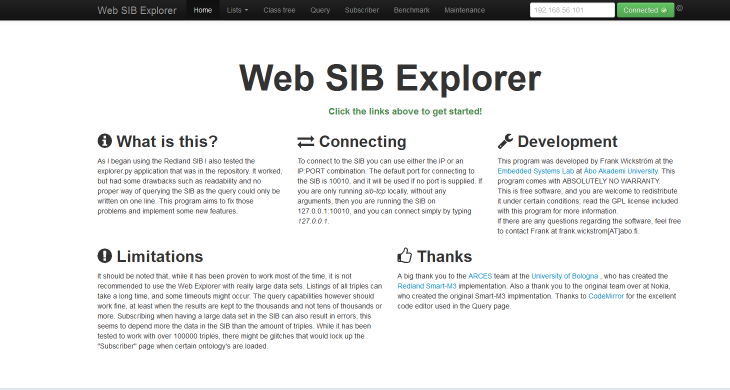
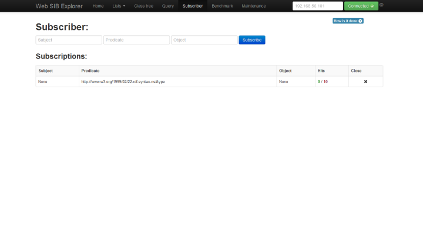
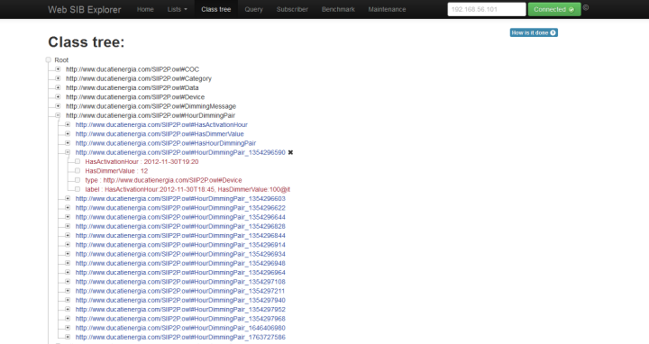

Change Log
1.1 (18.03.2013)
* Added SPARQL Subscriptions (experimental)
* Added one sample SPARQL query, "Count instances of classes"
* Fixed some output on the maintenance page
1.0 (27.02.2013)
+ Added ability to list all triple hits of a subscription
+ Added ability to pass IP and PORT arguments to the application at startup (Python 2.7 and above only)
* Now closes all subscriptions on exit
* Removed all debug info and getting ready for release
* Added missing icons to the front page
Getting started with Web SIB Explorer.
1.1 (18.03.2013)
* Added SPARQL Subscriptions (experimental)* Added one sample SPARQL query, "Count instances of classes"
* Fixed some output on the maintenance page
1.0 (27.02.2013)
+ Added ability to list all triple hits of a subscription+ Added ability to pass IP and PORT arguments to the application at startup (Python 2.7 and above only)
* Now closes all subscriptions on exit
* Removed all debug info and getting ready for release
* Added missing icons to the front page
Getting started with Web SIB Explorer.
The Web SIB explorer does not require any installation, it does however depend on some Python packages. To install those, follow the instructions in "requirements.txt"
Running:
To run it type python explorer.py or if you are on Windows, you can simply type explorer.py or double-click the explorer.py file. The open your web browser and go to http://127.0.0.1:5000
You can also pass the argument --ip and --port for running the application on a different IP and PORT
What is Web SIB Explorer
As I began using the Redland SIB I also tested the explorer.py application that was in the repository. It worked, but had some drawbacks such as readability and no proper way of querying the SIB as the query could only be written on one line. This program aims to fix those problems and implement some new features.
Development
This program was developed by Frank Wickström at the Embedded Systems Lab at Åbo Akademi University. This program comes with ABSOLUTELY NO WARRANTY. This is free software, and you are welcome to redistribute it under certain conditions; read the GPL license included with this program for more information. If there are any questions regarding the software, feel free to contact Frank at frank.wickstrom[AT]abo.fi.
Limitations
It should be noted that, while it has been proven to work most of the time, it is not recommended to use the Web Explorer with really large data sets. Listings of all triples can take a long time, and some timeouts might occur. The query capabilities however should work fine, at least when the results are kept to the thousands and not tens of thousands or more. Subscribing when having a large data set in the SIB can also result in errors, this seems to depend more the data in the SIB than the amount of triples. While it has been tested to work with over 100000 triples, there might be glitches that would lock up the "Subscriber" page when certain ontology's are loaded.
Screenshots
Main view
Query view
Subscriber view
Class tree view
Thanks
A big thank you to the ARCES team at the University of Bologna , who has created the Redland Smart-M3 implementation. Also a thank you to the original team over at Nokia, who created the original Smart-M3 implmentation. Thanks to CodeMirror for the excellent code editor used in the Query page.